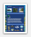
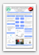

Carlos N. Andreu
Software Engineer / Web Developer
Objective
To acquire an entry-level position that will help me improve my skills and knowledge as a computer engineer while serving as an asset to my employer.
Skills
App Development
Talent for building applications for Windows, Mac OSX, Linux and Android.
Web Development
Ability to create, manage and enhance interactive and secure web applications.
Project Direction
Proven ability to lead and manage a wide variety of design and development projects in team and independent situations.
Technical
- Java
- Python
- Ruby
- C
- Assembly
- Bash
- HTML
- CSS
- Javascript (JQuery)
- PHP
- SQL
- Mac OS X
- Windows XP/Vista/7
- Linux
- Android
- Git/Hg/Svn
Work Experience
Verizon Wireless
Network Operation Center Intern
Summer 2011
Monitored Verizon's voice and data network for potential outages and worked with local technicians to resolve the issues expediently. Remotely debugged routers made by Lucent, Motorola, Ericsson and Nortel. Filed FCC and FAA reports for serious network events affecting emergency phone access or towers. Based on data mining and analysis; proposed and presented a web application to consolidate network information into a central repository, to provide easier and faster access for NOC technicians working to resolve issues. Fulfilled my tasks in a Unix and Windows 7 environment mainly using: Shell (Command Prompt), VSM, NetAnalyst and Remedy.
CIEL
Web Developer
2010-2011
Web developer, designer and administrator for group of marine biologists and anthropologists. Advised employer on operating system optimization and website administration. Helped with issues and upgrades pertinent to hardware, software and networking. [View Blog Splash Page] [View CIEL's Blog]
{kind=link}
{kind=link}
{kind=link}
{kind=link}
{kind=link}
SeaGrant
Network Administrator
2009-2010
Worked with computers running: GNU/Linux, Windows and OSX. Diagnosed and fixed hardware and software errors. Ensured the wired and wireless network continued to run safely and efficiently. Made sure they had a backup plan so they didn't lose critical data (RAID-1, Microsoft SyncToy, OSX's TimeMachine). [View SeaGrantPR.org]
COOP El Cemí
Cashier and Salesman
2005-2006
Duties included dealing with a diverse customer population, handling customer inquiries, selling and stocking various items, handling money and recording sales.
Research Projects
Verizon Wireless Task Manager
Android Application Developer
2011
Built a Task Manager Application utilizing Java and the Android SDK to list and kill running programs on an Android-based smartphone. Designed a feedback form within the application for submitting feedback to the wireless provider. Structured a database for receiving and storing the feedback so that it could be used for data mining purposes. Gave a presentation in an IAP event.
{kind=link}
Versatile Service-Oriented Wireless Mesh Network
Network Engineer
2011
Worked with existing 802.11 technologies to build an efficient and self-healing wireless mesh network. Configured various Linux-based systems to use Optimized Link State Routing (OLSR) Protocol to transmit data through the wireless mesh network.
{kind=link}
{kind=link}
Awards
Reto 2.0 2011 Award Winner
Web Developer
2011
The competition was opened to all college students and it was sponsored by IBM, HP and Microsoft. The idea was to promote college students to build a web 2.0 application. My team built http://enterar.me which roughly translates to: learn. The goal of the site is to have a single view of news events that are happening around me and being shared by my friends. It pulls data from Twitter and Facebook and even includes sentiment analysis to show whether it's "good news" (e.g. the US government is debt free) or "bad news" (e.g. 9.8 Earthquake Hits Chile). [View News Paper Clipping] [View Enterar.me]
{kind=link}


Personal Projects
Yet Another Professor Rating
Web Developer
2010
Yapr fills a need for students from the University of Puerto Rico (UPR) to talk about their professors and rate them on difficulty and learnability. I worked on the project alone and used HTML for markup, CSS for styling, MySQL for my database, PHP for server-side scripting and Javascript for client-side scripting. I promoted the website using Facebook (over 1500 likes) and physical flyers. As August 2011 the website has seen over 140,000 views and people tend to browse the site for an average of almost 6 minutes. [View Website] [View Facebook Group]

{kind=link}
{kind=link}
KiloMetro7
Android Developer
2011
Worked with two other Android Developers to make an Android applications capable of reporting holes on the road and acts of vandalism (ie. graffiti). People are able to install this application, take a picture of the item, upload it and view a map with all the items. My main contributions were taking the pictures, storing it with the proper GPS data and the UI.

Student Organizations
Free Culture @ UPRM
Web Designer and Board Member
2006-Present
Students for Free Culture (SFC) is a diverse, non-partisan group of students and young people who are working to get their peers involved in the free culture movement. SFC chapters exist at over 40 colleges and universities around the world. SFC has collaborated with Creative Commons, the Electronic Frontier Foundation, Public Knowledge, Downhill Battle, and other free software and media reform groups. In our local chapter I've helped build our online presence (website, blog, twitter, facebook) and worked on various activities such as: Ubuntu Install Fest, Open Source Game Night, Free CD Giveaway and a Petition for Free/Open Books. [View freeculture.org] [View our local chapter's website]


School Projects
Databases
Student
2010
I learned abut database system architecture, SQL, functional dependencies and normalization. For the database application design and implementation part of the course, I built an online platform to facilitate participatory democracy within organizations and countries. Following the protocol of one person, one vote, and fostering an environment of dialogue before voting. My goal was to help every user participate in the decision process. The DB was normalized to BCNF and the site was built from scratch using HTML, CSS, Javascript, PHP and MySQL.
{kind=link}
{kind=link}
Microprocessors II
Student
2010
Our goal was to use an Arduino Micro Controller to build a Remote Control (RC) for a Quadcopter. I worked as a Project Manager and my tasks included getting status reports from everyone, keeping the project on schedule and serving as a point of contact for the professor. My main contribution to the project was to get over the air serial communication working correctly and reliably between our RC and the Quadcoper. The remote control was sending positional data relative the RC's position and receiving data from various sensors such as: temperature, sonar (altitude), latitude, longitude and velocity.

Microprocessors I
Student
2009
I worked developing two class projects in Intel 8082 Assembly that ran on DOSBox. The first one was a screen saver with two objects (ships) moving across the screen, they left a trail changing the background while they moved and after some time they would repaint the background. For the second one I was tasked with creating a Piano you could play with your keyboard. When you pressed a keys should sound and lit up on the screen accordingly. It also had the ability to record and playback songs.


Advanced Programming in Java
Student
2008
I did three class projects in Java for my Advanced Programing course. The first one was a financial calculator, you are to do everything you would on a normal calculator and you can calculate things like interest over a number of periods given a certain balance. The second one was a Mandlebrot set, a particular mathematical set of points, whose boundary generates a distinctive and easily recognizable two-dimensional fractal shape. The last one is game called Omega Space, you can move your ship and shoot bullets at asteroids and enemy ships.


Education
Major : Computer Engineering
Expected Graduation Date : December, 2011
GPA : 3.36/4.00
GPA : 3.36/4.00
University of Puerto Rico, Bayamón (2006-2008)
Relevant Courses : Introduction to Programming and Algorithms, Foundations of Computing.
University of Puerto Rico, Mayaguez (2008-Present)
Relevant Courses : Advanced Programming, Data Structures, Programing Languages, Databases, Computer Architecture, Operating Systems, Microprocessor Interfacing, Video Game Art, Circuit Analysis, Analog and Digital Electronics.
Carlos Andreu — carlos.andreu@upr.edu — (787) - 516-0993